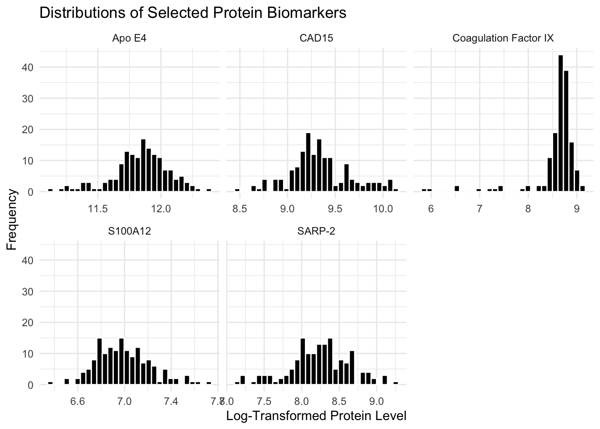

Our proteins sampled are: S100A12 Apo E4 SARP-2 CAD15 Coagulation Factor IX
If you want a subtitle put it here
Use this as a template. Keep the headers and remove all other text. In all, your report can be quite short. When it is complete, render and then push changes to your team repository.
Write a brief one-paragraph abstract that describes the contents of your write-up.
The dataset originates from Hewitson et al. (2021), Blood biomarker discovery for autism spectrum disorder. The data were obtained from serum samples of 154 male children aged from 18 months to 8 years, including 76 boys diagnosed with autism spectrum disorder (ASD) and 78 typically developing (TD) controls. All participants were recruited through The Johnson Center for Child Health and Development in Austin, TX, and ASD diagnoses were confirmed via the Autism Diagnostic Observation Schedule (ADOS) and Autism Diagnostic Interview-Revised (ADI-R) under DSM-5 criteria. TD children were screened with the Adaptive Behavior Assessment System (ABAS-II) to rule out developmental concerns.
Blood samples were collected after participants fasted, then processed under controlled lab conditions. Protein levels were measured using the SomaLogic SOMAScan platform, which originally captured 1,317 proteins per sample. After running quality control checks, 1,125 proteins were kept for analysis.
Summarize the methodology of the paper in 1-3 paragraphs. You need not explain the methods in depth as we did in class; just indicate what methods were used and how they were combined. If possible, include a diagram that depicts the methodological design. (Quarto has support for GraphViz and Mermaid flowcharts.) Provide key results: the proteins selected for the classifier and the estimated accuracy.
In our analysis of the ASD biomarker data, we made several key methodological decisions:
These decisions were made to balance: - Discovery of novel biomarkers vs. risk of false positives - Model complexity vs. interpretability - Statistical rigor vs. practical clinical utility - Reproducibility vs. exploratory analysis
Summarize your findings here. I’ve included some subheaders in a way that seems natural to me; you can structure this section however you like.
What do you imagine is the reason for log-transforming the protein levels in biomarker-raw.csv?
Before protein levels are measured, a log-transformation is applied. The protein levels in biomarker-raw.csv are logarithmically transformed to better capture small variations in biomarker level expression. When working with microscopic data such as protein levels, the range of values is often dramatic. As a result, data can often be accentuated more or less and make overall trends harder to detect. To control for this, we can apply a log-transformation to standardize our data range.
To verify this, we can sample from 5 proteins in the dataset and see their respective distributions.
Our proteins sampled are: S100A12 Apo E4 SARP-2 CAD15 Coagulation Factor IX
After plotting the histograms of our sampled proteins, we see that they most (except Apo E4) exhibit notable skewness and are not normally distribution. Additionally, the range for these values is extremely wide. Next, we apply a log-transformation to help standardize our distribtutions.

After transforming our values, we see that the range is now much considerably smaller. Additionally, most of our proteins sampled follow a close-to-normal distribution. Interestingly, Coagulation Factor IX appears to have a median of about 8.8. This trend was not as apparent with applying a transformation. Thus, we have reason to suspect that this protein should be further investigated.
Temporarily remove the outlier trimming from preprocessing and do some exploratory analysis of the outlying values. Are there specific subjects (not values) that seem to be outliers? If so, are outliers more frequent in one group of the other?
Through our previous analyses, we see that the distribution of proteins are transformed to easily detect which have a non-normal relationship that can be investigated further. Shifting our focus, we aim to see whether subjects are outliers. That is, we aim to see whether there are subjects, portrayed as rows, that consist of outliers among multiple protein levels.
| Group | mean_outliers | median_outliers | sd_outliers | max_outliers |
|---|---|---|---|---|
| ASD | 17.04 | 9.5 | 20.61 | 119 |
| TD | 19.65 | 10.0 | 30.39 | 154 |
We created a table to see outlier trends by subject group. To do so, we standardized all 1,317 protein levels and counted values with an absolute value greater than 3 as an outlier. Based on our table, we see that ASD subjects had an average of about 17.04 outliers in protein levels while TD subjects had about 19.65. Additionally, the median outlier counters were nearly identical (9.5 for ASD and 10 for TD), indicating that the two groups have similar overall variation in protein measurements. However, the standard deviations (20.6 for ASD and 30.4 for TD) and maximum outlier counts (119 and 154, respectively) suggest that a few individual subjects in both groups exhibited unusually high numbers of outlying protein values. Overall, this does not suggest there being systematic differences between groups, rather it suggests there are few subjects in the data that have greater individual differences.
Call:
glm(formula = class ~ ., family = binomial(link = "logit"), data = train)
Coefficients:
Estimate Std. Error z value Pr(>|z|)
(Intercept) -0.1697 0.2234 -0.760 0.44731
DERM -0.6105 0.3590 -1.700 0.08905 .
RELT -0.5058 0.3231 -1.565 0.11750
IgD -0.7381 0.2386 -3.093 0.00198 **
PTN -0.1146 0.3203 -0.358 0.72058
FSTL1 -0.3208 0.3030 -1.059 0.28970
---
Signif. codes: 0 '***' 0.001 '**' 0.01 '*' 0.05 '.' 0.1 ' ' 1
(Dispersion parameter for binomial family taken to be 1)
Null deviance: 170.12 on 122 degrees of freedom
Residual deviance: 125.28 on 117 degrees of freedom
AIC: 137.28
Number of Fisher Scoring iterations: 5To explore the impact of selecting more proteins for the biomarker panel, we expanded the selection criteria to identify the top 20 proteins using three different methods: t-tests for differential expression, Random Forest importance scores, and LASSO regression coefficients. This expansion allows us to evaluate whether including additional proteins could improve classification performance or reveal additional biomarkers of interest.

| Overlap Type | Count | Percentage |
|---|---|---|
| Selected by all methods | 4 | 20 |
| Selected by ≥2 methods | 9 | 45 |
| Unique proteins total | 47 | 235 |
Key findings from expanding the protein selection:
Method Agreement: Among the top 20 proteins, 4 were identified by all three methods, suggesting strong consensus on these biomarkers. An additional 5 proteins were selected by at least two methods.
Unique Contributions: Each method identified some proteins not found by the others, with a total of 47 unique proteins across all methods. This suggests that different statistical approaches may capture distinct aspects of the protein-ASD relationship.
Ranking Patterns: The visualization shows that while some proteins are consistently ranked highly across methods, there is considerable variation in the rankings, particularly for proteins ranked lower in the top 20.
Implications: The expanded panel reveals additional proteins that may be biologically relevant to ASD, though their predictive value would need to be validated in follow-up studies. The overlap analysis suggests that using multiple selection methods provides complementary information about potential biomarkers.
Metrics tables `metrics_yours` and/or `metrics_full` not available.
Run the analysis that creates these objects (e.g. scripts/analysis-main.R) or define them in an earlier chunk to display the comparison table.To identify a simpler panel while maintaining comparable classification accuracy, we applied a training-only feature selection procedure using the same combination of multiple testing and random forest methods as in the in-class analysis. By restricting selection to the training set, we avoided using any test data during feature selection, ensuring a more methodologically sound and generalizable panel. This yielded a 4-protein panel, compared with the 5-core proteins identified in Hewitson et al.’s original study. The reduction of a single protein is a modest simplification, and despite this, the panel achieved strong predictive performance (sensitivity 0.75, specificity 0.80, accuracy 0.774, AUC 0.871). Benchmarking against the in-class analysis (sensitivity 0.875, specificity 0.867, accuracy 0.871, AUC 0.925) shows that the slight reduction in performance is minor relative to the substantial gain in interpretability and efficiency, supporting the utility of the smaller panel. By performing feature selection exclusively on training data, our panel avoids overfitting to the dataset and is more likely to generalize to new cohorts. Using a smaller panel with fewer proteins has several practical benefits, including cheaper and faster assays in a lab setting, culminating in easier replication.